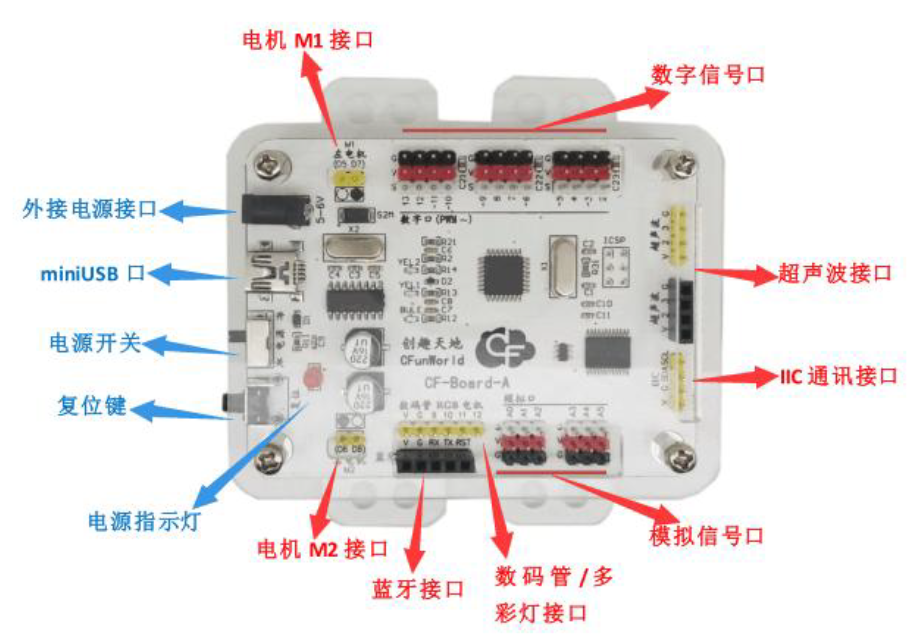

CF-Board，名字由 Create Fun Board 而来，意味创造乐趣的板子，是一款专门为 Arduino、Scratch 入门学习者准备的控制板。它的组成包括 Arduino UNO 主控板，Arduino 扩展板，电机驱动板等，是这些板子的统一。
CF-Board 主板和普通 Arduino 板一样适用于 S4A，ArduBlock，Arduino IDE 等编程环境，更是与主流图形化编程软件 AS-Block 完美契合，是一款兼备了 Arduino与 Scratch 的学习工具，通过 AS-Block 软件，可以轻松的实现 LED 的点亮、蜂鸣器歌唱、电机转动等功能，非常适合编程初学者的入门和创意想法的实现。

CF-Board 主板的处理器核心是 ATmega328，具有 12 路数字输入/输出（其中6 路可作为 PWM 输出），6 路模拟输入，一个 16MHZ 晶体振荡器，一个 miniUSB，一个电池插座，一个复位按钮，一个 ICSP 固件上传口，及电机驱动和其他功能扩展接口。
处理器概要：
数字输入/输出(Digital Input/Output)：
D2-D13 口为数字输入输出口，可进行数字量传感器的读取和执行期间的控制，包括 LED 灯的点亮，按钮状态的监测等，均可使用这些 I/O 口。
模拟输入(Analog Input):
A0-A6 口为模拟输入口，可进行模拟量传感器的读取，例如温度、光强等，均可以使用这些端口。
PWM 输出：
CF-Board 数字引脚中的 D3、D5、D,6、D9、D10、D11 引脚具有 PWM 输出功能（数字标号旁带有“~”即为 PWM 引脚），可进行电机、LED 亮度等的控制。由于内置定时器的原因，在调用 arduino 官方舵机库时，D9，D10 将无法进行 PWM输出。
通讯接口：
蓝牙接口：专用蓝牙接口，支持数据无线通讯，带 RST 设置功能，支持程序无线上传。 IIC 接口：支持与 IIC 器件连接通讯，注意，IIC 接口占用 A4、A5 端口，即在进行 IIC 通讯时，A4、A5 模拟口不可使用。
外接传感器接口：
数码管接口：提供有专门的数码管显示模块接口，同时占用 D9、D10、D11，即在使用数码管时，D9、D10、D11 不可使用，结合 AS-Block 使用更方便。 RGB 接口：提供有专门的多彩灯模块接口，同时占用 D9、D10、D11，通过PWM 控制，可实现 RGB 任意调色，结合 AS-Block 使用更方便。 超声波接口：提供专门的超声波接口（可排母或排阵连接），同时占用 D2、 D3，结合 AS-Block 使用更方便。
电机接口：
主板带有双路驱动，支持两路电机调速，制动，正反转控制，可以实现小车等的控制，其中左电机占用 D5（控制转速）D7（控制方向），右电机占用 D6（控制转速）D8（控制方向）。
LED 灯：
CF-Board提供一个与D13连接的LED 灯，可直接通过程序实现该LED 灯控制，作为板子的唯一执行器件，可进行简单的编程练习，掌握 LED 的控制。
ICSP 接口：
该接口用于 CF-Board 板 Bootloader 的上传。
供电：
主板采用 5V 外接电源供电（可以采用 4 节标准 1.5V/节的干电池或 1.2V/节的充电电池）或者 USB 5V 供电。
CF-Board 是一款简单实用的主控设备，是 arduino 板，扩展板，电机驱动板等的有机统一，主板所有接口均提供专用接插线，实现模块与主板连接的便捷性，同时采用颜色区分的接口既有效避免了针脚接插错误的问题，又给学习者以直观的认识；在外观上，进行了亚克力外壳的封装保护，既避免了针脚扎手的问题，又降低了短路、人为损害器件的可能性，同时特有的孔槽方便了后期的作品搭建。